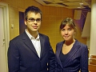

Maria Fredman
B.A. (Bachelor of Arts) industridesign vid Umeå Universitet.
| Född: | 1982 Skuthamn, Piteå lfs, Piteå kn. | |
|---|
| Examen: | 2001-06-08 NV, Strömbackaskolan, Piteå. | Studentexamen. |
|---|
| Examen: | 2007 Umeå Universitet. | B.A. (Bachelor of Arts) industridesign |
|---|
| Levde: | 2008 Sundsgatan 35, Piteå. [1] | |
|---|
| Levde: | 2009 Stipendiegränd 2 C, Umeå. [2] | |
|---|
| Levde: | 2011-12-27 Tryffelvägen 6 G, Furulund, Piteå, Pitteå kn. [3] | |
|---|
| Levde Sambo: | 2011-01-01 Gnejsvägen 8 C lgh 1201, Umeå. [3] |
|---|
| Levde Sambo: | 2013 Tryffelvägen 6 G, Furulund, Piteå, Pitteå kn. [3] |
|---|
Noteringar
Utbildning på Umeå Universitet inom området Industriell Design.
Fredfors Handelsbolag 969746-7349
Bolagsmän: Ejerfors, Erik Conny Andreas & Fredman, Maria Eva-Stina
Registreringsdatum: 2009-12-16
F-Skatt - reg.datum: 2010-02-20
Momsgrupp: Helårsredovisning HB, max 200 000
Reg. för moms: 2010-03-03
ADRESS
TRYFFELVÄGEN 6 G
944 71 Piteå
Norrbottens län
Firmatecknare
Firman tecknas gemensamt av bolagsmännen
Personhistoria
| Årtal | Ålder | Händelse |
|---|
| 1982 |
|
Partnern Andreas Ejerfors föds 1982 Piteå, Piteå lfs, Piteå kn [4] |
| 1982 |
|
Födelse 1982 Skuthamn, Piteå lfs, Piteå kn |
| 2001 |
|
Examen 2001-06-08 NV, Strömbackaskolan, Piteå |
| 2007 |
|
Examen 2007 Umeå Universitet |
| 2008 |
|
Levde 2008 Sundsgatan 35, Piteå [1] |
| 2009 |
|
Levde 2009 Stipendiegränd 2 C, Umeå [2] |
| 2011 |
|
Levde Sambo Andreas Ejerfors 2011-01-01 Gnejsvägen 8 C lgh 1201, Umeå [3] |
| 2011 |
|
Levde 2011-12-27 Tryffelvägen 6 G, Furulund, Piteå, Pitteå kn [3] |
| 2013 |
|
Levde Sambo Andreas Ejerfors 2013 Tryffelvägen 6 G, Furulund, Piteå, Pitteå kn [3] |
Källor
| [1] | www.hitta.se |
| |
| | |
| [2] | www.fredman.se |
| |
| | |
| [3] | https://www.ratsit.se/sok/avancerat/person |
| |
| | |
| [4] | Mantalslängd 1991, Norrbottens län |
| |
|
|  |
| 2004-09-24. David och Maria Fredman innan Davids disputation vid KI, Stockholm. |
| |
|
| 2001-06-08. Ulla-Stina och studenten Maria Fredman, NV-programmet, Strömbackaskolan, Piteå |
|
{kind=link}
{kind=link}